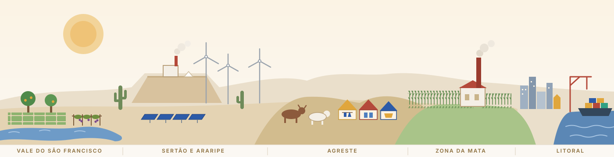

História econômica de Pernambuco
História econômica · Pernambuco
Pernambuco em ciclos
O açúcar fez a capitania, o gado e o algodão abriram o interior, as fábricas trouxeram a cidade operária, e o século XX acrescentou fruta irrigada, jeans, gesso, porto, refinaria, carro e código. Cada ciclo subiu, caiu ou mudou de forma por razões parecidas: preço lá fora, seca, decisão em Brasília, estrada e porto, gente para trabalhar. Esta página conta essa história em capítulos curtos e mostra o que ficou de cada ciclo nos dados de hoje.

A linha do tempo
Cada faixa é uma atividade. A cor diz em que fase ela estava: surgindo, no auge, em declínio ou se refazendo. Os pontos são marcos; passe o mouse para ler e clique para fixar e abrir a fonte. O nome da atividade leva ao capítulo. A escala do tempo muda de ritmo nas linhas pontilhadas: os séculos coloniais aparecem comprimidos para dar espaço ao que aconteceu depois de 1850. Depois da linha de hoje, os círculos tracejados são o que já está contratado ou previsto.
1535 a 1654 · Zona da Mata e Recife
1 O açúcar que fez a capitania
Duarte Coelho chegou em 1535 com cana trazida da Ilha da Madeira e a ideia de que a terra molhada da várzea pagaria a aventura. Pagou. Nos primeiros anos já havia cerca de trinta engenhos, e Pernambuco se tornou o centro da economia açucareira da colônia. O engenho era fábrica, fazenda e vila ao mesmo tempo, e o trabalho era de africanos escravizados, porque a mão de obra indígena não bastava.
A riqueza atraiu os holandeses, que ficaram de 1630 a 1654. A guerra quebrou engenhos e, depois da expulsão, os próprios holandeses levaram a técnica para o Caribe, que virou concorrente. O açúcar nunca saiu da Mata, mas Pernambuco não voltou a ser o centro do mundo açucareiro.
O que puxou Terra de massapê, crédito e mercado europeu, trabalho escravizado.
O que derrubou Guerra holandesa e a concorrência do açúcar do Caribe.
O que ficou A Zona da Mata canavieira, o latifúndio e a cidade portuária do Recife.
1650 a 1983 · Agreste e Sertão
2 Para dentro: gado e algodão
Enquanto a Mata plantava cana, o gado subia o rio e ocupava o interior, porque o boi anda sozinho até o comprador. Couro, carne e animais de tração abasteciam os engenhos. A seca de 1777 a 1780 mostrou o limite: na estiagem de 1778 o Nordeste perdeu sete de cada oito cabeças. O rebanho voltou, e no censo de 1872 o Brejo já tinha mais de 1.500 criadores.
O algodão chegou como resposta a uma fábrica do outro lado do oceano. A Revolução Industrial inglesa comprava toda a fibra que houvesse, e o interior de Pernambuco plantou. Quando os Estados Unidos dominaram o mercado, depois de 1830, o preço caiu; quando a Guerra de Secessão cortou o algodão americano, entre 1861 e 1865, voltou a subir. Na segunda metade do século XIX o algodão foi a força que movia o interior e ajudou a formar o próprio Agreste como região. O ciclo terminou em 1983, quando o bicudo chegou a Pernambuco e devastou lavouras pequenas e sem defesa.
O que puxou Demanda das fábricas inglesas, guerras que tiravam o concorrente do mercado, terra barata no interior.
O que derrubou Secas, o algodão americano e, por fim, o bicudo.
O que ficou A pecuária do Agreste, hoje bacia leiteira, e a rede de feiras e cidades do interior.
1875 a 1985 · Mata e Região Metropolitana
3 Usinas e fábricas
Em 1875 a Usina São Francisco da Várzea fez a primeira moagem de uma usina no estado. O velho engenho banguê, que moía só a própria cana, foi dando lugar a usinas que compravam a cana de muitos engenhos e depois juntavam as terras. Pernambuco chegou a ter mais de cem usinas. Em 1933 o governo Vargas criou o Instituto do Açúcar e do Álcool, que por quase sessenta anos decidiu cotas e preços.
A outra face da modernização foi o tecido. Em 1891 nasceu em Paulista uma fábrica de sacaria; em 1904 Herman Lundgren a comprou e montou ali uma cidade-fábrica, com vila operária, comércio e controle sobre a vida dos trabalhadores. Por volta de 1950 Paulista tinha 7.785 operários, segundo município industrial do estado. Em 1958 a empresa estagnou, e a fábrica fechou em meados dos anos 1980.
O que puxou Máquina a vapor, ferrovia e capital concentrado em poucas famílias.
O que derrubou Maquinário envelhecido e a concorrência das fábricas do Sudeste.
O que ficou Usinas que ainda moem na Mata e a tradição têxtil, que migrou para o Agreste.
1959 a 1990 · o estado inteiro
4 O Estado entra em cena
Em 15 de dezembro de 1959 a Lei 3.692 criou a SUDENE, com sede no Recife e a tarefa de industrializar o Nordeste com incentivos. Foi a SUDENE, por exemplo, que financiou o reequipamento da fábrica de Paulista entre 1958 e 1963. Nos anos seguintes vieram outras decisões tomadas fora do estado e que mudaram o mapa dentro dele: a Codevasf, em 1974, com superintendência em Petrolina; o Proálcool, em 1975, resposta ao choque do petróleo, que deu à cana uma segunda vida; e, por lei estadual, o Complexo de Suape, em 1978.
Em 1990 a maré virou. O IAA foi extinto, preços e exportações de açúcar foram liberados, e a abertura comercial expôs indústrias que tinham crescido protegidas. Em 1998 e 1999 usinas tradicionais como a Central Barreiros pararam de moer.
Boa parte dos ciclos de Pernambuco começou ou acabou com uma decisão tomada fora do estado.
1968 até hoje · Sertão do São Francisco
5 O sertão que virou pomar
Em 1968 o Projeto Bebedouro, em Petrolina, dividiu 130 hectares de caatinga em 16 lotes irrigados. Era um teste. Em 1979 veio o Perímetro Senador Nilo Coelho, com 20 mil hectares entre Petrolina e Casa Nova, e em 1988 os produtores criaram a Valexport para vender fruta fresca lá fora: em quatro safras a exportação passou de 500 toneladas para 34 mil.
Manga e uva levaram o Vale para mercados de dezenas de países. Em 2022 os vinhos do Vale do São Francisco receberam a primeira indicação geográfica de vinhos tropicais do mundo, e em 2024 Pernambuco foi o estado que mais exportou fruta no Brasil. A água, que fez o ciclo, também é o risco: na seca de 2015 o reservatório de Sobradinho chegou a cerca de 1% do volume útil.
O que puxou Água do São Francisco, perímetros públicos, sol o ano inteiro e organização dos produtores para exportar.
O que ameaça Secas longas, custo da energia e dependência de poucos mercados.
O que ficou Petrolina como polo do Sertão e uma cadeia que vai do viveiro à câmara fria e ao porto.
1950 até hoje · Agreste e Araripe
6 Feira, jeans e gesso
Em meados do século XX, em Santa Cruz do Capibaribe, retalhos de tecido viraram roupa vendida em feira: era a sulanca. Caruaru entrou nos anos 1970, Toritama em 1980, especializada em jeans. O polo cresceu quase sem plano e com muita informalidade, e ganhou endereço próprio: o centro de compras de Toritama em 2001, o Polo Caruaru em 2004 e o Moda Center, em Santa Cruz, em 2006, com cerca de 10 mil boxes e lojas. Em 2014 a RAIS contava 2.182 confecções formais no polo; o Sebrae estima mais de 100 mil pessoas na produção e na venda.
No extremo oeste, outro ciclo nasceu debaixo da terra. A gipsita do Araripe virou gesso em calcinadoras de Araripina, Trindade, Ipubi, Ouricuri e Bodocó. Em 1999 Pernambuco já produzia 87,6% da gipsita do país; hoje o polo responde por cerca de 95% do gesso nacional.
O que puxou Feira como canal de venda, redes de família, matéria-prima local e baixo custo de entrada.
O que trava Informalidade, lenha da caatinga como energia e logística cara para chegar aos grandes mercados.
O que ficou Santa Cruz e Toritama, onde a confecção é mais de 90% das indústrias formais, e o Araripe do gesso.
1978 até hoje · Litoral Sul e Mata Norte
7 Porto, refinaria e carro
Suape foi fundado em 7 de novembro de 1978 e passou quase três décadas como promessa, até virar, nos anos 2000, o lugar do maior ciclo de investimento recente do estado. Em 2007 começaram as obras do Estaleiro Atlântico Sul, cujo primeiro navio, o João Cândido, encerrou mais de dez anos sem construção naval no país; em 2014 a Refinaria Abreu e Lima começou a operar, e o combustível passou a liderar as exportações do estado.
A crise da Petrobras e da indústria naval derrubou o ciclo: dos 22 navios encomendados ao estaleiro, 7 foram cancelados, e o quadro, que chegou a cerca de 7 mil funcionários, encolheu. A refinaria agora recebe nova rodada de investimento, de R$ 12 bilhões. No norte, em Goiana, a fábrica da Jeep começou a produzir em 2015 e passou de um milhão de veículos em 2023, trazendo fornecedores para uma região até então de cana.
O que puxou Porto de águas profundas, investimento federal e de grandes empresas, incentivos fiscais.
O que derrubou Dependência de poucos compradores, crise na Petrobras e obras que não terminaram, como a Transnordestina.
O que ficou Porto, refinaria e estaleiro em Suape, e um polo automotivo em Goiana.
2000 até hoje · Recife e Sertão
8 Código e vento
Em 2000 o Recife Antigo, onde ficava o porto do tempo dos holandeses, virou Porto Digital, então um projeto incipiente. Vinte e cinco anos depois, são mais de 475 empresas e 21,5 mil empregos diretos. É o primeiro ciclo de Pernambuco que não depende de terra, água ou porto.
O mais novo é o do vento e do sol. Em 2015 entrou em operação em Tacaratu o primeiro parque híbrido do país, eólico e solar no mesmo lugar, ampliado em 2021. O Sertão, que por séculos foi lugar de seca, passa a vender energia.
O que puxou Universidades, empresas reunidas no mesmo bairro, vento constante e sol forte.
O que trava Disputa por talentos com o resto do mundo e rede de transmissão para escoar energia.
O que fica Duas cadeias novas, que ainda estão escrevendo o primeiro capítulo.
O que a história explica dos dados
9 Ciclos que ficam no mapa
Quase nenhum ciclo de Pernambuco acabou de verdade: cada um deixou cidades, empresas e saberes que continuam no mapa das vocações. A cana segue na Mata, o leite no Agreste, a confecção no polo da sulanca, o gesso no Araripe, a fruta no Vale. O que muda é o peso de cada um e quem chega por cima. Para ver onde cada atividade está hoje, veja as vocações por cadeia, o panorama e as páginas de cada cadeia e nicho.
Daqui para a frente
10 O que vem por aí
Os próximos ciclos vão depender dos mesmos fatores que fizeram e desfizeram os anteriores: água, energia, estrada e porto, tributo e gente. A diferença é que, desta vez, quase todos estão em obra ou em transição ao mesmo tempo. Abaixo, o que já está contratado ou previsto, e o que pesa contra cada aposta. As datas são as de quem executa e podem mudar.
Água · 2026
O São Francisco chega ao Agreste
Hoje cerca de 900 mil pessoas em 10 cidades recebem água da transposição. A 1ª etapa da Adutora do Agreste deve chegar a 23 municípios e cerca de 1,3 milhão de pessoas até o fim de 2026. É a região da confecção e do leite, que cresceu com pouca água.
O que pesa contra: a 2ª etapa, para mais 45 municípios, ainda depende de recursos federais.
Energia · 2026
Vento e sol viram combustível
Suape recebe a primeira fábrica de e-metanol do país, da European Energy, com R$ 2 bilhões. O combustível é feito com energia renovável, e o vento e o sol do Sertão ganham um comprador industrial dentro do estado.
O que pesa contra: é um mercado novo, com preço e demanda internacionais ainda em formação.
Refino · 2029
A refinaria dobra de tamanho
Com o Trem 2, contratado por R$ 4,9 bilhões, a Abreu e Lima passa de 130 mil para 260 mil barris por dia e vira a segunda maior refinaria da Petrobras.
O que pesa contra: a transição energética encurta o horizonte do combustível fóssil.
Logística · sem data
A Transnordestina em Pernambuco
O trecho Custódia-Arcoverde foi licitado e teve vencedora homologada em 2026. O Salgueiro-Suape, parado há mais de dez anos, segue sem data, à espera do TCU. É o trilho que ligaria o gesso do Araripe e o Sertão ao porto.
O que pesa contra: a obra começou em 2006, com entrega prevista para 2010.
Tributo · 2027 a 2033
O fim da guerra fiscal
A reforma tributária acaba com os incentivos de ICMS até 2033, e a cobrança passa para o destino, o que favorece estados consumidores como Pernambuco. Atrair empresas vai depender mais de infraestrutura, segurança jurídica e inovação do que de desconto de imposto.
O que pesa contra: dois sistemas convivendo até 2033, com risco de disputa sobre créditos e benefícios.
Gente · contínuo
O ciclo que depende de cabeça
Aos 25 anos, o Porto Digital passa de 475 empresas e 21,5 mil empregos diretos. É o primeiro ciclo do estado em que o insumo principal é gente formada, e não terra, água ou porto.
O que pesa contra: a disputa por talentos agora é com o mundo inteiro, no trabalho remoto.
Se a história serve de guia, o próximo ciclo vai nascer onde água, energia e logística chegarem primeiro.
Para ir mais fundo
- Celso Furtado, Formação Econômica do Brasil (1959). A economia do açúcar, a pecuária como extensão dela e a concorrência das Antilhas.
- Caio Prado Jr., História Econômica do Brasil (1945). O renascimento agrícola do fim do século XVIII, com o algodão, e a economia do Império.
- Manuel Correia de Andrade, A Terra e o Homem no Nordeste (1963). Mata, Agreste e Sertão: cana, gado e algodão, região por região.
- Evaldo Cabral de Mello, Olinda Restaurada (1975) e O Norte Agrário e o Império (1984). A guerra holandesa e o açúcar; o Norte perdendo escravizados e poder para o café.
- Peter Eisenberg, Modernização sem mudança (1977). Engenhos centrais, usinas, ferrovia e abolição no açúcar de Pernambuco, de 1840 a 1910.
- Francisco de Oliveira, Elegia para uma re(li)gião (1977). A SUDENE, o planejamento e os conflitos do Nordeste.
- Gadiel Perruci, A República das Usinas (1978). O açúcar pernambucano na Primeira República.
Os marcos em tabela
Ver todos os marcos e fatores, com as fontes
| Quando | Onde | Marco | Fonte |
|---|---|---|---|
| 1535 | Açúcar e álcool | Duarte Coelho chega. O primeiro donatário funda a capitania e aposta na cana; nos primeiros anos já são cerca de 30 engenhos. | Maranhão, G. A saga da cana-de-açúcar no Nordeste. Folha de Pernambuco, 15/12/2021; Furtado, C. Formação Econômica do Brasil. Rio de Janeiro: Fundo de Cultura, 1959 (Parte II) |
| 1550 | Mão de obra | Escravidão africana. A mão de obra indígena não basta; africanos escravizados movem os engenhos. | Maranhão, G. A saga da cana-de-açúcar no Nordeste. Folha de Pernambuco, 15/12/2021; Furtado, C. Formação Econômica do Brasil. Rio de Janeiro: Fundo de Cultura, 1959 (Parte II) |
| 1583 | Secas | Primeira seca registrada. Fernão Cardim descreve a seca em Pernambuco. | Seca só parou de matar nos anos 70. Diário do Nordeste |
| 1630 a 1654 | Açúcar e álcool | Invasão holandesa. Os holandeses ocupam o Recife atraídos pelo açúcar; ficam até 1654. | Mello, E. C. Olinda Restaurada: guerra e açúcar no Nordeste, 1630-1654. Rio de Janeiro: Forense-Universitária, 1975; Maranhão, G. A saga da cana-de-açúcar no Nordeste. Folha de Pernambuco, 15/12/2021 |
| 1654 | Preços e mercados lá fora | Açúcar das Antilhas. Depois de expulsos, os holandeses levam a técnica para o Caribe, que passa a disputar o mercado. | Furtado, C. Formação Econômica do Brasil. Rio de Janeiro: Fundo de Cultura, 1959 (Parte II) |
| 1777 a 1780 | Secas | Seca dos três setes. Morre mais da metade da população atingida. | Seca só parou de matar nos anos 70. Diário do Nordeste |
| 1778 | Gado, couro e leite | Seca leva 7/8 do rebanho. Na estiagem de 1778 o Nordeste perde sete de cada oito bois. | Seca só parou de matar nos anos 70. Diário do Nordeste |
| 1780 | Preços e mercados lá fora | Revolução Industrial. Fábricas inglesas puxam o algodão do Nordeste. | Prado Jr., C. História Econômica do Brasil. São Paulo: Brasiliense, 1945 |
| 1830 | Preços e mercados lá fora | Algodão americano. Estados Unidos substituem o algodão brasileiro. | Prado Jr., C. História Econômica do Brasil. São Paulo: Brasiliense, 1945 |
| 1858 | Infraestrutura | Primeira ferrovia. Primeira seção da Recife and São Francisco Railway, ligando o Recife ao Cabo, construída para o açúcar. | Aço e suor pelo açúcar e em nome do progresso: 1ª Seção da Recife São Francisco Railway (Pernambuco, 1852-1859). UFRPE; Eisenberg, P. L. Modernização sem mudança: a indústria açucareira em Pernambuco, 1840-1910. Rio de Janeiro: Paz e Terra, 1977 |
| 1861 a 1865 | Algodão | Guerra de Secessão. Sem o algodão do sul dos EUA, o de Pernambuco volta a ser procurado. | Andrade, M. C. A Terra e o Homem no Nordeste. São Paulo: Brasiliense, 1963; Prado Jr., C. História Econômica do Brasil. São Paulo: Brasiliense, 1945 |
| 1861 a 1865 | Preços e mercados lá fora | Guerra de Secessão. Preço do algodão dispara. | Prado Jr., C. História Econômica do Brasil. São Paulo: Brasiliense, 1945; Andrade, M. C. A Terra e o Homem no Nordeste. São Paulo: Brasiliense, 1963 |
| 1870 | Mão de obra | Tráfico para o café. Escravizados do Norte vendidos para as lavouras de café do Sul. | Mello, E. C. O Norte Agrário e o Império, 1871-1889. Rio de Janeiro: Nova Fronteira, 1984; Cordeiro, L. C. A. O Agreste de Pernambuco e o mundo do trabalho nos oitocentos. NEPO/Unicamp |
| 1872 | Gado, couro e leite | Criadores no Agreste. O censo de 1872 conta 1.528 criadores no Brejo e 808 em Caruaru. | Cordeiro, L. C. A. O Agreste de Pernambuco e o mundo do trabalho nos oitocentos. NEPO/Unicamp |
| 1875 | Açúcar e álcool | Primeira usina. Usina São Francisco da Várzea faz a primeira moagem do estado; o estado chegaria a ter mais de cem usinas. | Cuenca, M. A. G.; Mandarino, D. C. Mudança no âmbito da atividade canavieira nos principais municípios produtores de Pernambuco. Embrapa Tabuleiros Costeiros, Documentos 117, 2007 |
| 1877 a 1879 | Secas | Grande Seca. Dom Pedro II promete vender até a última joia da coroa. | Seca só parou de matar nos anos 70. Diário do Nordeste |
| 1888 | Mão de obra | Abolição. Fim da escravidão; os engenhos e usinas passam ao trabalho livre. | Lei nº 3.353, de 13 de maio de 1888 (Lei Áurea); Eisenberg, P. L. Modernização sem mudança: a indústria açucareira em Pernambuco, 1840-1910. Rio de Janeiro: Paz e Terra, 1977 |
| 1891 | Fábricas de tecidos | Fábrica em Paulista. Nasce como fábrica de sacaria, apêndice da Usina Timbó. | Silva Neto, R. F. Cotidiano e lazer em Paulista-PE (1904-1958). Dissertação, UFPB, 2022 |
| 1904 | Fábricas de tecidos | Os Lundgren compram. Herman Lundgren adquire a fábrica: origem da Companhia de Tecidos Paulista. | Silva Neto, R. F. Cotidiano e lazer em Paulista-PE (1904-1958). Dissertação, UFPB, 2022 |
| 1909 | Política nacional | Obras contra as secas. Criação do órgão federal de obras contra as secas (hoje Dnocs). | Seca só parou de matar nos anos 70. Diário do Nordeste |
| 1915 | Secas | Seca de 1915. Mortes e migração em massa para a Amazônia. | Seca só parou de matar nos anos 70. Diário do Nordeste |
| 1933 | Açúcar e álcool | Criação do IAA. O governo Vargas cria o Instituto do Açúcar e do Álcool, que regula o setor por quase sessenta anos. | Maranhão, G. A saga da cana-de-açúcar no Nordeste. Folha de Pernambuco, 15/12/2021 |
| 1933 | Política nacional | IAA. Regulação federal do açúcar e do álcool. | Maranhão, G. A saga da cana-de-açúcar no Nordeste. Folha de Pernambuco, 15/12/2021 |
| 1950 | Fábricas de tecidos | 7.785 operários. Paulista é o segundo município industrial do estado, atrás só do Recife. | Neves, A. M. L. Operários da Companhia de Tecidos Paulista e os serviços públicos (1940-1950). Anais ANPUH, 2024 |
| 1958 | Fábricas de tecidos | Ponto de inflexão. A CTP estagna; a SUDENE financia reequipamento entre 1958 e 1963. | Silva Neto, R. F. Cotidiano e lazer em Paulista-PE (1904-1958). Dissertação, UFPB, 2022 |
| 1959 | Política nacional | SUDENE. Lei 3.692: incentivos para industrializar o Nordeste. | Lei nº 3.692, de 15 de dezembro de 1959 (cria a SUDENE); Oliveira, F. Elegia para uma re(li)gião: SUDENE, Nordeste, planejamento e conflito de classes. Rio de Janeiro: Paz e Terra, 1977 |
| 1968 | Fruta irrigada e vinho | Projeto Bebedouro. Primeiro projeto piloto de irrigação na caatinga: 130 hectares em 16 lotes. | Possídio, E. L. Petrolina: um sertão verde. Embrapa Semiárido, Documentos |
| 1973 | Preços e mercados lá fora | Choque do petróleo. Abre caminho para o Proálcool. | Maranhão, G. A saga da cana-de-açúcar no Nordeste. Folha de Pernambuco, 15/12/2021 |
| 1974 | Política nacional | Codevasf. A Suvale vira Codevasf, com superintendência em Petrolina. | Possídio, E. L. Petrolina: um sertão verde. Embrapa Semiárido, Documentos |
| 1975 | Açúcar e álcool | Proálcool. Resposta ao choque do petróleo de 1973 (Decreto nº 76.593/1975). | Maranhão, G. A saga da cana-de-açúcar no Nordeste. Folha de Pernambuco, 15/12/2021 |
| 1975 | Política nacional | Proálcool. Programa nacional do álcool combustível. | Maranhão, G. A saga da cana-de-açúcar no Nordeste. Folha de Pernambuco, 15/12/2021 |
| 1978 | Porto, refino e navios | Nasce Suape. Complexo Industrial Portuário fundado em 7 de novembro de 1978. | Papo de Negócio traz série de entrevistas sobre os 45 anos de Suape. Movimento Econômico, 20/12/2023 |
| 1978 | Infraestrutura | Suape. Fundação do complexo industrial portuário. | Papo de Negócio traz série de entrevistas sobre os 45 anos de Suape. Movimento Econômico, 20/12/2023 |
| 1979 | Fruta irrigada e vinho | Perímetro Nilo Coelho. 20 mil hectares entre Petrolina e Casa Nova; hoje cerca de 20% do PIB de Petrolina. | Possídio, E. L. Petrolina: um sertão verde. Embrapa Semiárido, Documentos; Júlio, M. Oásis produtivo: a fruticultura como transformação do semiárido pernambucano. Diario de Pernambuco, 07/11/2025 |
| 1979 a 1983 | Secas | Seca de 1979 a 1983. Coincide com a crise do petróleo; frentes de trabalho no interior. | Seca só parou de matar nos anos 70. Diário do Nordeste |
| 1980 | Confecção do Agreste | Toritama e o jeans. Toritama começa a produzir e vender, especializada em jeans. | Xavier, T. M. C. Polo de confecções do agreste de Pernambuco. Caminhos de Geografia, v. 21, n. 73, 2020 |
| 1983 | Algodão | Chega o bicudo. Praga detectada em Pernambuco e na Paraíba em julho de 1983; em 1985 já infestava 350 mil hectares. | Barbosa, S.; Lukefahr, M. J.; Braga Sobrinho, R. O bicudo do algodoeiro. Embrapa-DDT, Documentos 4, 1986 |
| 1988 | Fruta irrigada e vinho | Valexport. Produtores se juntam para exportar fruta fresca; de 500 t para 34 mil t em quatro safras. | Possídio, E. L. Petrolina: um sertão verde. Embrapa Semiárido, Documentos |
| 1990 | Açúcar e álcool | Extinção do IAA. Preços e exportações liberados; em 1998-99 usinas como Central Barreiros param de moer. | Cuenca, M. A. G.; Mandarino, D. C. Mudança no âmbito da atividade canavieira nos principais municípios produtores de Pernambuco. Embrapa Tabuleiros Costeiros, Documentos 117, 2007 |
| 1990 | Política nacional | Abertura e fim do IAA. Mercado livre para o açúcar. | Cuenca, M. A. G.; Mandarino, D. C. Mudança no âmbito da atividade canavieira nos principais municípios produtores de Pernambuco. Embrapa Tabuleiros Costeiros, Documentos 117, 2007 |
| 1999 | Gesso do Araripe | 88% da gipsita do país. Pernambuco produz 87,6% da gipsita e 91% do gesso nacional, com 45 minas e 62 calcinadoras. | DNPM/ANM. Sumário Mineral Brasileiro 2000: gipsita |
| 2000 | Tecnologia da informação | Porto Digital. Nasce o parque tecnológico no Recife Antigo. | Porto Digital 25 anos: hub de tecnologia e talentos transforma economia do NE. Movimento Econômico, 12/12/2025 |
| 2001 | Confecção do Agreste | Centro de compras em Toritama. Mais de mil pontos de venda num só lugar. | Xavier, T. M. C. Polo de confecções do agreste de Pernambuco. Caminhos de Geografia, v. 21, n. 73, 2020 |
| 2006 | Confecção do Agreste | Moda Center. Inaugurado em Santa Cruz: cerca de 10 mil boxes e lojas. | Xavier, T. M. C. Polo de confecções do agreste de Pernambuco. Caminhos de Geografia, v. 21, n. 73, 2020 |
| 2006 a 2025 | Infraestrutura | Transnordestina. Obras começam; o trecho Salgueiro-Suape sai do contrato em 2022 e volta a ser licitado em 2025. | Transnordestina tem edital de licitação publicado: entenda a história da ferrovia. Diario de Pernambuco, 31/10/2025 |
| 2007 | Porto, refino e navios | Estaleiro Atlântico Sul. Começam as obras em Suape; o João Cândido, primeiro navio, encerra mais de dez anos sem construção naval no país. No começo da década seguinte, cerca de 7 mil funcionários. | Testemunhas narram os dez anos do Estaleiro Atlântico Sul. Folha de Pernambuco |
| 2012 a 2017 | Secas | Seca de 2012 a 2017. Seis anos seguidos de estiagem; Sobradinho chega a 1%. | Seca no Nordeste corre risco de bater recorde e completar seis anos em 2017. Brasil de Fato, 16/12/2016; Júlio, M. Oásis produtivo: a fruticultura como transformação do semiárido pernambucano. Diario de Pernambuco, 07/11/2025 |
| 2014 | Confecção do Agreste | Pico formal. 2.182 confecções com carteira assinada no polo, segundo a RAIS. | Xavier, T. M. C. Polo de confecções do agreste de Pernambuco. Caminhos de Geografia, v. 21, n. 73, 2020 |
| 2014 | Porto, refino e navios | Refinaria Abreu e Lima. Começa a operar o Trem I; combustível vira o principal produto exportado pelo estado. | Com refinaria, combustível passou a ser a commodity nº 1 de Pernambuco. Movimento Econômico, 18/01/2024 |
| 2015 | Fruta irrigada e vinho | Sobradinho a 1%. A seca leva o reservatório a cerca de 1% do volume útil. | Júlio, M. Oásis produtivo: a fruticultura como transformação do semiárido pernambucano. Diario de Pernambuco, 07/11/2025 |
| 2015 | Automóveis | Jeep em Goiana. Começa a produção do polo automotivo. | Jeep Renegade Willys marca 10 anos da fábrica da Stellantis em Goiana. Movimento Econômico, 12/05/2025 |
| 2015 | Vento e sol | Primeiro parque híbrido. Fontes dos Ventos, em Tacaratu, junta vento e sol: o primeiro do país. | Os fortes ventos da energia limpa. Folha de Pernambuco, 03/2022 (conteúdo patrocinado Enel) |
| 2021 | Vento e sol | Fontes II. Mais 99 MW em 18 aerogeradores. | Os fortes ventos da energia limpa. Folha de Pernambuco, 03/2022 (conteúdo patrocinado Enel) |
| 2022 | Fruta irrigada e vinho | IG dos vinhos. Vale do São Francisco recebe a primeira indicação geográfica de vinhos tropicais. | INPI, IG Vale do São Francisco (vinhos), registro BR402020000021-3; Forbes Agro, 11/2022 |
| 2023 | Gado, couro e leite | 1,3 bilhão de litros. Pernambuco produz cerca de 1,33 bilhão de litros de leite; Itaíba, Buíque e Pedra lideram. | D'Oliveira, P. S. et al. Produção leiteira e aspectos socioeconômicos no Agreste Pernambucano. Revista Contemporânea, v. 5, n. 7, 2025 (Embrapa) |
| 2023 | Automóveis | 1 milhão de veículos. Oito anos depois, o polo passa de um milhão de unidades. | Polo Automotivo Stellantis de Goiana: 8 anos e mais de 1 milhão de veículos. Mecânica Online, 06/2023 |
| 2024 | Gesso do Araripe | 95% do gesso. Mais de 500 empresas e 3,5 mil empregos diretos em Araripina, Trindade, Ipubi, Ouricuri e Bodocó. | Polo do Araripe responde por 95% do gesso nacional. Movimento Econômico, 21/10/2024 |
| 2024 | Fruta irrigada e vinho | Maior exportador de fruta. Pernambuco lidera as exportações de frutas do país: US$ 307 milhões. | Júlio, M. Oásis produtivo: a fruticultura como transformação do semiárido pernambucano. Diario de Pernambuco, 07/11/2025 |
| 2025 | Porto, refino e navios | R$ 12 bilhões na RNEST. Nova fase de investimento na refinaria. | Com R$ 12 bi, RNEST dá fôlego ao sonho da Transnordestina em Suape. Movimento Econômico, 02/12/2025 |
| 2025 | Tecnologia da informação | 25 anos. Mais de 475 empresas e 21,5 mil empregos diretos. | Porto Digital 25 anos: hub de tecnologia e talentos transforma economia do NE. Movimento Econômico, 12/12/2025 |
| 2026 (previsto) | Vento e sol | E-metanol em Suape. Primeira fábrica de e-metanol do país, da European Energy, com R$ 2 bilhões; operação prevista para o segundo semestre de 2026. | PE terá a 1ª indústria de e-metanol do Brasil, com investimento de R$ 2 bilhões. Movimento Econômico, 12/04/2024 |
| 2026 (previsto) | Infraestrutura | Água do São Francisco no Agreste. 1ª etapa da Adutora do Agreste prevista para o fim de 2026: 23 municípios e cerca de 1,3 milhão de pessoas. | Mais de 900 mil pessoas recebem água do São Francisco em Pernambuco. Movimento Econômico, 26/08/2025; Adutora do Agreste avança e transforma abastecimento de água no interior de Pernambuco. Agência Gov, 01/2026 |
| 2027 (previsto) | Política nacional | CBS no lugar de PIS e Cofins. Começa para valer a transição da reforma tributária. | Reforma tributária: Pernambuco cria duas frentes para a transição. Movimento Econômico, 30/07/2026 |
| 2029 (previsto) | Porto, refino e navios | Refinaria dobra. Com o Trem 2, a RNEST passa de 130 mil para 260 mil barris por dia; operação prevista para 2029. | Petrobras assina contrato de R$ 4,9 bilhões com a Consag para o Trem 2 da RNEST. eixos, 17/06/2025 |
| 2030 (previsto) | Infraestrutura | Transnordestina em Pernambuco. Trecho Custódia-Arcoverde licitado; o Salgueiro-Suape segue sem data, à espera do TCU. | Transnordestina tem edital de licitação publicado: entenda a história da ferrovia. Diario de Pernambuco, 31/10/2025; Ferrovia Salgueiro-Suape segue sem data para retomada das obras. Movimento Econômico, 03/07/2026 |
| 2033 (previsto) | Política nacional | Fim dos incentivos de ICMS. Acaba o modelo de atração por benefício de ICMS; a cobrança passa ao destino, o que favorece estados consumidores como Pernambuco. | Reforma tributária: Pernambuco cria duas frentes para a transição. Movimento Econômico, 30/07/2026 |
Baixe o texto completo em Word. Os marcos e as fases estão em config/linha_do_tempo.csv, com a fonte de cada um. Os números de “hoje” vêm da RAIS, pelo mesmo recorte de cadeias do resto do painel.